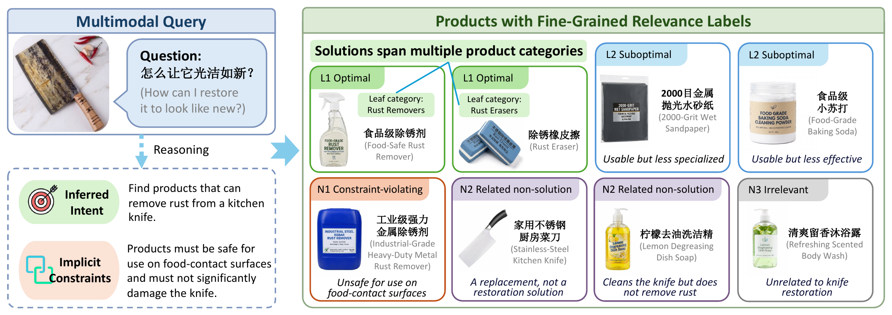
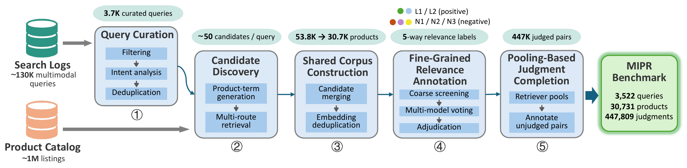
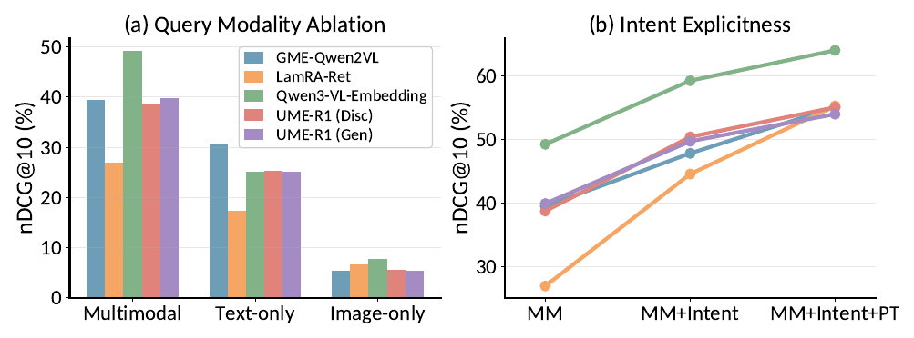
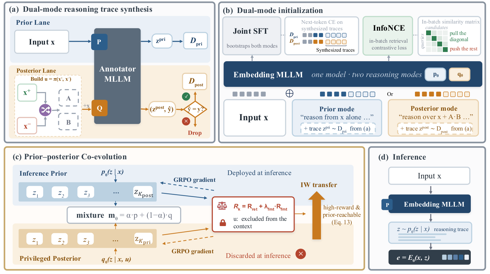
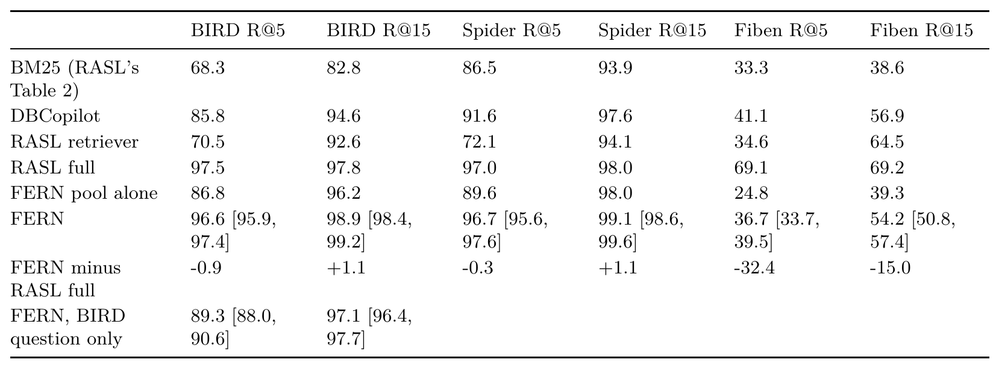
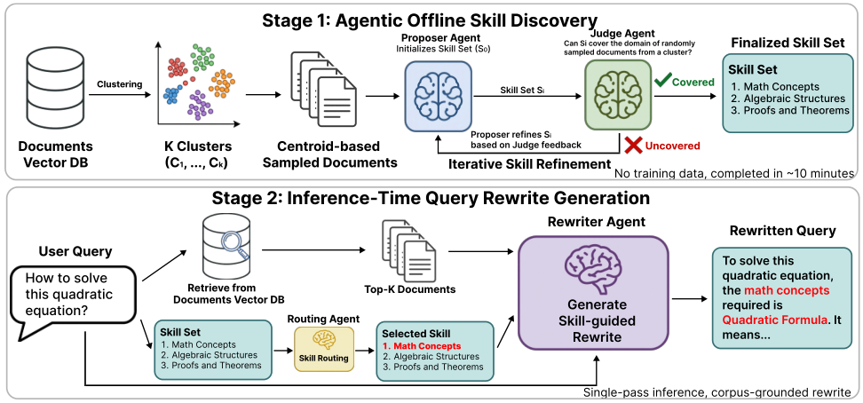

Contents · 6 sections
1Why the same intent is not just a hunt for one right product2How the benchmark was built from search logs3How zero-shot evaluation works, and where embedding retrievers stall4How much reranking adds, and how far the pool upper bound still sits5What happens with image only, text only, or a written-out intent6How to read the numbers, and what is still unansweredSHARE
A rusty kitchen knife and a question about making it look new: Tongji and Taobao turn intent-first, multi-category product search into a benchmark
In e-commerce search, a shopper may not type a product name. They may also upload a scene photo and ask how to fix what is in front of them. The same image-and-question intent may map to solutions from several product categories, and some look-alikes violate a constraint that was never written down.
Researchers at Tongji University, Taobao & Tmall Group of Alibaba, and Eastern Institute of Technology, Ningbo turn this setting into MIPR, a Multimodal Intent-to-Product Retrieval benchmark. The queries come from real Chinese e-commerce search logs. The release keeps 3,522 image-plus-question queries, a shared catalog of 30,731 products, and 447,809 five-level relevance judgments. Data and code are public on Hugging Face as leequeue/MIPR. Qiang Li, Xuan Lu, Jian Ruan, and Manxi Lin are listed as equal contributors, and Junjun Zheng is the corresponding author.
The best embedding retriever reaches only 49.23% nDCG@10 on all queries, and solution-category recall@10 is 55.86% on queries with at least two judged optimal categories.
The best reranker raises those two numbers to 60.11% and 67.00%, so ranking quality improves, but the gaps to the candidate-pool upper bound remain 25.93 and 13.22 points. Evaluation is zero-shot: models see only the original query image and question, and products are represented by the original image and title. Intent analyses used while building the dataset are not given to the systems under test.
Why the same intent is not just a hunt for one right product
The paper uses a rusty kitchen knife as its running example. The paired question is: “How can I restore it to look like new?” The caption says the text in the figure was translated and lightly edited.
A food-grade rust remover and a rust-erasing rubber can both be optimal solutions, but they sit in different leaf categories, which the paper calls solution categories. Sandpaper and baking soda can also work, yet they take more effort or are less stable, so they are labeled suboptimal. An industrial rust remover looks like a fix, but it is unsuitable for a kitchen utensil and is labeled constraint-violating. Buying a new knife is related, but it does not restore this knife, so it is a related non-solution. Body wash is irrelevant.
The five grades are written as L1, L2, N1, N2, and N3. L1 is an optimal solution, L2 is suboptimal, N1 violates a constraint, N2 is related but not a solution, and N3 is irrelevant. The leaf category of an L1 product is one solution category for that query.

The authors summarize the setting in three parts: retrieval needs reasoning, one intent can map to solutions in multiple categories, and labels must be fine enough to separate suboptimal solutions, constraint violations, and related non-solutions. They write that, to their knowledge, no existing benchmark jointly supports all three. That is the authors’ own claim, not an industry fact independently checked here.
How the benchmark was built from search logs
Construction starts from about 130K multimodal queries and about 1M catalog listings. Query curation leaves about 3.7K queries; candidate discovery then finds about 50 products per query; the shared corpus is reduced from 53.8K to 30.7K items. Five-level annotation and pooling-based judgment completion follow, so the release contains 3,522 queries, 30,731 products, and 447,809 judgments.

Structured intent analyses are generated by Claude Sonnet 4.6. A query passes eligibility only if both GLM-5.2 and DeepSeek-V4-Pro accept it, which leaves about 9.8K queries. Near-duplicate intents are then removed with intent embeddings and a cosine threshold of 0.7, because this step is meant to drop semantically close repeats, leaving about 3.7K queries. In a human check of 200 structured analyses, 96.5% correctly covered the visual content and the intent, and 1.5% of the queries were judged unsuitable or borderline.
Candidate discovery first generates at most six product terms with Qwen3.6-27B, followed by a reflection pass. On a 50-query human check, reflection lifts coverage of human-identified categories from 81% to 89%. The terms are then used for BM25 and a fusion of two text embedding retrievers, together with vision-language embedding retrieval, and the intent description is run again through text and vision-language retrieval. After merging, about 50 candidates remain per query.
A locally deployed Qwen3.6-27B model first does a coarse binary screen, assigning N3 to clearly irrelevant candidates and keeping borderline cases for fine annotation. The remaining candidates are independently labeled by Qwen3.7-Max, GLM-5.2, and DeepSeek-V4-Pro under the five-way schema, then aggregated by majority vote. If the three models cross the positive-negative boundary, or if all three labels differ, Claude Sonnet 4.6 breaks the tie. Annotator A labeled 50 queries, and annotator B relabeled 10 of them, with 87.8% exact agreement; most disagreements fell between N2 and N3. Against this human reference, the pipeline reaches 81.3% exact agreement and 81.4% macro-F1. For L1, precision is 85.8% and recall is 83.5%; for N1, precision is 88.2% and recall is 85.4%, which means the decision boundary was also checked, but the labels are still not a fully human gold standard.
The judgment distribution is skewed. Of 447,809 judgments, 17,559 are L1 (3.92%), 26,732 are L2 (5.97%), 9,832 are N1 (2.20%), 93,197 are N2 (20.81%), and 300,489 are N3 (67.10%). Irrelevant items therefore dominate, so ranking metrics have to separate a few optimal and suboptimal solutions from many easy confusions, rather than only test whether an item is somehow related to the query.
Once products are merged into the shared corpus, an item found for another query may still be unjudged for the current one. Following standard pooling practice, the authors build extra pools from the ten multimodal embedding models used in the evaluation, each contributing its top 20 products per query. Previously unjudged pairs in those merged pools are labeled with the same five-level procedure and added to the initial annotations. Pooling contributes 299,479 of the released judgments. The average number of judged L1 products per query rises from 3.54 to 4.99, and the average number of judged L1 solution categories rises from 2.72 to 3.16. About 29% of L1 judgments, and 14% of judged L1 solution categories, come from pooling, which means the scored optimal-solution set is more complete than the first candidate-discovery pass alone. Pairs outside the pools receive zero gain in the metrics, so a relevant product that was never drawn into a judgment pool cannot add score. Hoot says

Illustrative, not a measured pair from the paper. Left: the rust-erasing rubber is already in the shared corpus, but it was never drawn into this rusty-knife query’s judgment pool, so the metrics give it zero gain. Right: the same pair is pulled into the merged top-20 pools of the ten official embedding models and labeled L1, and only then can it add score for this query.
Source
Paper §3.2.5: after the shared corpus is merged, a product may have entered through another query and still be unjudged for the current query; extra pools are built from the ten official multimodal embedding models with each model contributing its top 20 products, and previously unjudged pairs in those pools are labeled with the five-level procedure; pairs outside the pools receive zero gain. The knife-and-rubber contrast is illustrative, not a measured query–product pair reported in that section.How zero-shot evaluation works, and where embedding retrievers stall
Official evaluation is zero-shot. Models receive only the original query image and question, and products are represented by the original image and title; construction-time analysis text is not shown. Ten embedding retrievers search the same shared corpus, and UME-R1 is reported in both a discriminative and a generative checkpoint.
Metrics are reported on a 0–100 scale. For nDCG, L1 items have gain 2, L2 items have gain 1, and all other labels have gain 0. Solution-category recall, SC-R_L1@K, is the fraction of judged L1 solution categories that have at least one L1 product in the top K. The authors also report Qmulti: queries with at least two judged L1 solution categories.
This is a toy walkthrough, not a result from the paper. Suppose a query has two optimal solution categories, and the top 10 contain a food-grade rust remover but not the rust-erasing rubber. The query can still earn nDCG credit from that L1 item, but solution-category recall covers only half of the annotated categories. The example is only meant to show why the two metrics can come apart.
In Table 3, the strongest embedding retriever is the 8B Qwen3-VL-Embedding model. Its nDCG@10, @20, and @50 are 49.23, 52.76, and 57.52; L1 recall R_L1 at 10, 20, and 50 is 53.98, 66.92, and 79.61; Hit_L1 at rank 1 and rank 10 is 47.02 and 85.63. Solution-category recall@10 is 61.33 on all queries and 55.86 on the multi-category subset. Because Hit@10 already reaches 85.63 while category coverage on Qmulti is only 55.86, the systems often find one optimal product but struggle to recover several solution categories together.
The generative UME-R1 checkpoint improves only modestly over the discriminative one. It beats that checkpoint by only 1.18 points of nDCG@10 and 1.01 points of L1 recall@10, and it still trails the best embedding retriever.
How much reranking adds, and how far the pool upper bound still sits
Reranking is run on the top 50 candidates from that strongest first-stage retriever. Each reranker sees the original multimodal query and a candidate’s image and title, and judges whether the product is relevant to the user’s intent and can satisfy the need. Candidates are ranked by the yes probability from normalized yes/no next-token logits; it does not output five-level labels. The Oracle ranking first takes one L1 item from each L1 leaf category that appears in the pool, then the remaining L1 items, then L2, then the other labels.
The table below places the first-stage baseline, several rerankers, and this judgment upper bound side by side. The columns are nDCG@10, L1 recall@10, Hit@1, and solution-category recall@10 on Qmulti queries.
| System | nDCG@10 | R_L1@10 | Hit_L1@1 | SC-R_L1@10 (Qmulti) |
|---|---|---|---|---|
| Embedding baseline Qwen3-VL-Embedding-8B | 49.23 | 53.98 | 47.02 | 55.86 |
| Lychee-Rerank-MM | 55.85 | 62.37 | 53.80 | 63.57 |
| Qwen2-VL-7B-Instruct | 46.72 | 53.07 | 43.02 | 56.21 |
| Qwen3-VL-8B-Instruct | 54.78 | 59.82 | 53.29 | 62.99 |
| Qwen3-VL-Reranker-8B | 60.11 | 66.00 | 59.26 | 67.00 |
| Oracle upper bound | 86.04 | 78.95 | 94.97 | 80.22 |
The best reranker is the 8B Qwen3-VL-Reranker. Relative to the embedding baseline, it raises nDCG@10, L1 recall@10, and Hit@1 by 10.88, 12.02, and 12.24 points, and it lifts solution-category recall on Qmulti from 55.86 to 67.00. But those four scores remain 25.93, 12.95, 35.71, and 13.22 points below the pool upper bound, which means the top 50 still contain optimal items and uncovered categories that were not promoted.
Not every vision-language model helps as a reranker. The 7B Qwen2-VL-Instruct model falls below the embedding-only baseline on nDCG@10, L1 recall@10, and Hit@1.
What happens with image only, text only, or a written-out intent
The authors also ablate input modalities and report a diagnostic that adds construction-time intent information back in. The left panel of Figure 3 averages nDCG@10 over five retrievers: 6.20% with image only, 24.70% with text only, and 38.84% with both, so the image alone is far from enough, the question already carries much of the intent, and the two together are clearly stronger. The right panel looks only at Qwen3-VL-Embedding: the original query scores 49.23%, adding an intent description reaches 59.20%, and adding generated product terms reaches 64.00%. The authors call this a diagnostic reference rather than a controlled estimate of how hard intent inference is, because those texts were used during construction and are not given to models in the official zero-shot protocol.

Suboptimal products are not only occasional inversions. HeadInv_L2@50 is computed only on queries whose top 50 contain at least one L1 and one L2 product, and that query set changes with the model. The metric asks whether the highest-ranked L2 precedes every retrieved L1. Across the five retrievers, this rate ranges from 25.7% to 34.4%, so in more than a quarter of those queries an L2 item is still ranked ahead of every retrieved L1 item. Hit_N1@10 ranges from 20.9% to 44.7% on the fixed set of queries that have at least one judged constraint-violating product. Related non-solutions appear near the top much more often, with Hit_N2@10 from 88.9% to 92.5%. Qwen3-VL-Embedding has the highest Hit_N2@10, at 92.5%, but the lowest HeadInv_N2@50, at 36.5%. HeadInv_N2@50 is computed only on queries whose top 50 contain both an L1 item and a related non-solution, which means that on those queries the model often retrieves related non-solutions and yet often still ranks its highest L1 ahead of its highest related non-solution.
When the number of judged L1 solution categories grows from 1 to 8 or more, Qwen3-VL-Embedding’s nDCG@10 falls only from 53.3% to 46.7%, while solution-category recall@10 drops from 78.3% to 34.1%. This means ranking some relevant product near the top does not guarantee coverage of every annotated solution category.
How to read the numbers, and what is still unanswered
MIPR turns real “describe the need, then find a product” queries into an evaluation set with five-level labels and multi-category solutions. Embedding retrievers often recover useful candidates, but they struggle to rank optimal products highly and to cover several solution categories. Reranking closes part of the gap, but a large space remains between the best system and the judgment upper bound already present in the candidate pool.
These numbers have clear limits. The evaluation covers only the zero-shot setting, in which queries use the original image and question and products use the original image and title, and it does not say how a production system would behave if given a structured intent. Labels come from model votes plus a partial human check, with 81.3% exact agreement, not a fully human gold standard. Pooling enlarges the judged set, but pairs outside the pools get zero gain; the authors also study overlap between pooling systems and the evaluated retrievers, and the paper treats that as a sensitivity analysis, so unlabeled products should not all be read as confirmed negatives. The data come from Chinese e-commerce search logs, and the appendix describes use under the platform’s user agreements and privacy policy, so the same numbers should not be assumed to hold in another language or on another platform.
How did this read for you?
Hoot made a note. Thanks for the feedback.
One tap, no sign-in; tap again to undo. Only anonymous counts are kept, never who you are.
Related papersMore from Paper Daily
- Retrieval · 2026-11-18IntentFlow: An Intent-Driven Real-Time Multimodal Search System with Image-Text Queries at XiaohongshuIn user-generated-content communities, whether an image-text query matches a note depends on what the user wants to retrieve, not on visual or topical similarity alone. Reranking visual search results is not enough, because notes that fit the intent may never enter the candidate set. IntentFlow, deployed at Xiaohongshu, uses a hierarchical intent taxonomy so candidate retrieval and reranking shar…
 Retrieval · 2026-11-18LMEG-Doc: Layout-Grounded Multi-View Evidence Graphs for Multimodal Long-Document RetrievalWhen evidence in a long multimodal document is spread across pages and modalities, ranking each element only by its own similarity to the question can leave relevant figures and tables low in the list. LMEG-Doc first builds an evidence graph from layout and context, then uses a vision-language model to add relations across distant pages, and propagates multimodal retrieval scores along the graph…
Retrieval · 2026-11-18LMEG-Doc: Layout-Grounded Multi-View Evidence Graphs for Multimodal Long-Document RetrievalWhen evidence in a long multimodal document is spread across pages and modalities, ranking each element only by its own similarity to the question can leave relevant figures and tables low in the list. LMEG-Doc first builds an evidence graph from layout and context, then uses a vision-language model to add relations across distant pages, and propagates multimodal retrieval scores along the graph… Retrieval · 2026-11-12DocFS: File Systems as Agentic Reasoning Environments for Complex Multimodal Document Question AnsweringWhen a VLM agent answers questions over long documents that mix text, figures and tables, the hard part is often how the document is laid out for it, not the model. DocFS takes a plain route: it turns the document into a file system, with sections as nested directories and text, figures, tables and equations stored as separate files, plus index files and relation files that record which text goes…
Retrieval · 2026-11-12DocFS: File Systems as Agentic Reasoning Environments for Complex Multimodal Document Question AnsweringWhen a VLM agent answers questions over long documents that mix text, figures and tables, the hard part is often how the document is laid out for it, not the model. DocFS takes a plain route: it turns the document into a file system, with sections as nested directories and text, figures, tables and equations stored as separate files, plus index files and relation files that record which text goes…
Retrieval · 2026-10-27Beyond Post-Hoc Rewards: Privileged Reasoning Exploration for Multimodal EmbeddingsSome multimodal embedding models first have the model write reasoning about the input and then embed it along with the input, producing richer vectors. But training data only says which pairs are relevant, never what reasoning to write, so exploring from the input alone rarely finds reasoning that actually helps retrieval. PILOT has one multimodal LLM play two roles: one writes reasoning from the… Generative · 2026-10-29PailitaoMMSearch2.0 Technical Report: Scaling Generative Retrieval to Unified End-to-End Multimodal SearchIn Taobao's Pailitao, a user may photograph a shirt and ask for shorts to match it, which calls for a complementary item rather than a duplicate. The usual pipeline classifies intent first and routes to separate retrieval channels, so one wrong step breaks everything after it. Alibaba's report lets a 2B vision-language model read the raw image and instruction and generate product Semantic IDs dir…
Generative · 2026-10-29PailitaoMMSearch2.0 Technical Report: Scaling Generative Retrieval to Unified End-to-End Multimodal SearchIn Taobao's Pailitao, a user may photograph a shirt and ask for shorts to match it, which calls for a complementary item rather than a duplicate. The usual pipeline classifies intent first and routes to separate retrieval channels, so one wrong step breaks everything after it. Alibaba's report lets a 2B vision-language model read the raw image and instruction and generate product Semantic IDs dir…
Retrieval · 2026-11-12FERN: Cross-Benchmark Table Retrieval for Text-to-SQL with Frozen Retrievers and Learned RankingIn Text-to-SQL over a catalog of hundreds of tables, the first step is finding the tables a question needs, and the popular approach is to let an LLM read the schema and pick. FERN has no generative LLM in its retrieval path: three off-the-shelf retrievers each fetch candidates into one pool, every candidate table gets a large set of features, and a LightGBM ranker trained once on BIRD's training… Retrieval · 2026-10-26PersonalQuery-Benchmark:Evaluating Retrieval Robustness to Personalized User Expression DifferencesTwo shoppers want the same product. One asks for strawberry, lactose-free Greek yogurt in a short phrase; the other writes a longer sentence and misspells a word along the way. Will search return the same results? This paper builds a benchmark, PQB, from real user reviews in three Amazon categories to test whether results hold up when the same need is worded differently. They often do not. With t…
Retrieval · 2026-10-26PersonalQuery-Benchmark:Evaluating Retrieval Robustness to Personalized User Expression DifferencesTwo shoppers want the same product. One asks for strawberry, lactose-free Greek yogurt in a short phrase; the other writes a longer sentence and misspells a word along the way. Will search return the same results? This paper builds a benchmark, PQB, from real user reviews in three Amazon categories to test whether results hold up when the same need is worded differently. They often do not. With t…
Retrieval · 2026-10-28SkillQR: Agentic Skill Discovery for Reason-Intensive Query RewritingLLM query rewriting usually applies one instruction to every query, yet the right direction for a rewrite depends on the corpus. SkillQR clusters the corpus offline and has an LLM write a few rewrite instructions for the document types, such as listing the required data structures and algorithms; at query time the same model picks one before rewriting, with no training data. Its mined skills matc…
Discussion
Add experiment details, reproduction notes or a different take. Requires a GitHub sign-in.
Loading the discussion…